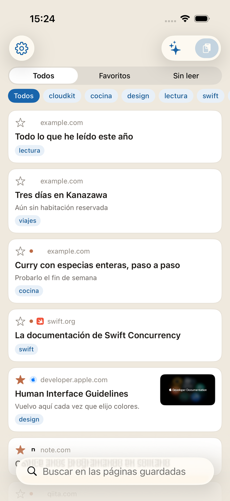
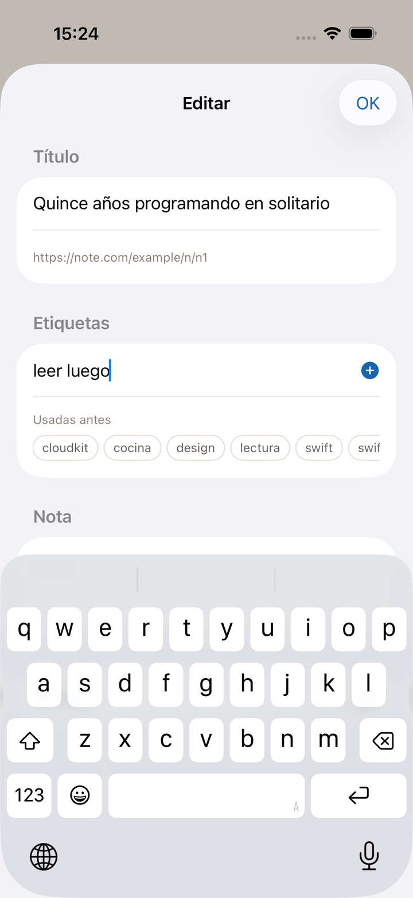
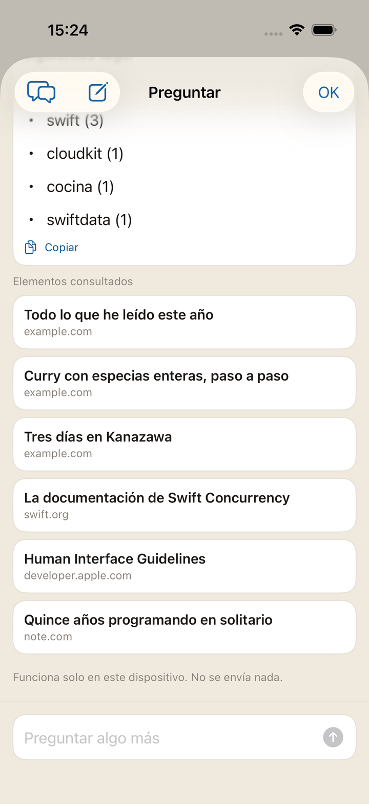
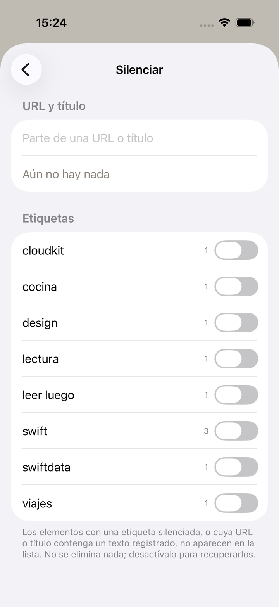
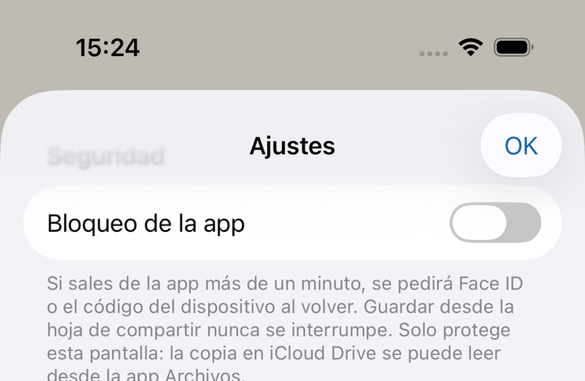

Una app de marcadores para iPhone
donde echar las páginas que quiere guardar.
Después las desentierra con etiquetas y notas.
Sin cuenta Sincronización iCloud Etiquetas y notas
Próximamente en el App Store

En el instante en que envía una página desde la hoja para compartir, ya está guardada. El título y la imagen los busca la app más tarde. Una mala cobertura no hace que falle el guardado en sí.

Buscar de una vez en títulos, URL, etiquetas, notas y el texto de las páginas. Acotar por etiqueta; separar por Sin leer y Favoritos.
Las etiquetas y las notas son los asideros que se deja a sí mismo. Tantas etiquetas como quiera, y las que ya usó vuelven como sugerencia.

Pregunte con sus propias palabras por lo que ha reunido y por cómo funciona la app. Los elementos consultados quedan bajo la respuesta y se abren al momento.
Mantenga pulsado un artículo y elija Resumen: se hace solo con el texto de esa página, para que decida si lo lee ahora.
Todo ocurre en su dispositivo. No se envía nada fuera. Solo en dispositivos compatibles con Apple Intelligence.

Lo que prefiera no ver se oculta registrando una cadena de su URL o de su título. Desactivar no es lo mismo que borrar.
También se ocultan etiquetas enteras. En ambos casos la regla permanece y usted la activa o la desactiva.

Una URL guardada es su historial, sin más. Nunca sale hacia un servidor del desarrollador — o más bien: no hay servidor. La sincronización queda en manos de iCloud, de Apple.
También puede ocultarlo aquí mismo. Active el bloqueo de la app y al abrirla se pedirá Face ID / Touch ID, o el código del dispositivo. Por omisión está desactivado.
El detalle está en la política de privacidad.
Aparece en los dispositivos con la misma cuenta de Apple. No hay paso de registro.
Una vez por semana, todo se escribe como JSON en iCloud Drive. La copia sobrevive a borrar la app.
Un widget muestra cuántos quedan sin leer. Con el bloqueo activado muestra solo esa cifra.
Guardar y buscar se invocan desde Atajos, y se integran en automatizaciones.
También hay una lista completa de funciones.
Guardar, encontrar, abrir, ordenar, ocultar, guardar una copia. Todos los gestos están reunidos en la página de la guía.
La app lleva el nombre del arrendajo común — kakesu en japonés. El pájaro esconde bellotas de una en una en sitios distintos, recuerda qué, dónde y cuándo, y vuelve a desenterrarlas después. Es justo lo que hace esta app, así que conservó el nombre del pájaro.
Los avisos de errores y las peticiones van por la página de contacto.
Próximamente en el App Store